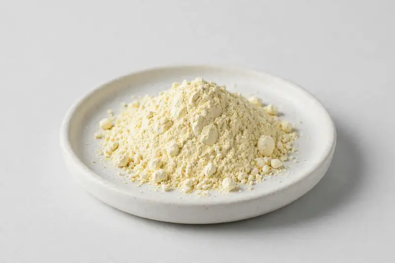

Bovine Colostrum — a dairy-derived powder offered in IgG and protein grades for immune-support and sports-nutrition formulations.

Overview
Bovine Colostrum Powder is derived from bovine first milk, the nutrient-rich fluid produced in the early days after calving. Buyers commonly request IgG grades in the 20-40% range as well as protein-standardised specifications for immune-support and sports-nutrition concepts. As a Xi'an-based trading company, we source through vetted partner producers and confirm each requested specification honestly before you commit.
Specifications below reflect commonly requested options in the market — not a stock list. Share your target spec and we'll confirm exactly what we can supply, honestly.
| Specification | Details |
|---|---|
| Botanical identity | Bovine colostrum powder (Bos taurus first milk) |
| Marker compound | Commonly requested spec grades: IgG 20-40%; protein-standardised grades |
| Appearance | Pale yellow to ivory fine powder |
| Analytical methods | Methods referenced in buyer specifications: HPLC |
| Mesh size | Typically 80–100 mesh (confirm per inquiry) |
| Testing | COA/TDS arranged on request; scope agreed per your spec |
Applications
Documentation
We don't claim in-house labs or certifications we don't hold. COA and TDS documents can be arranged on request, and testing scope is agreed against your specification before supply.
FAQ
Related products
Papain (Carica papaya)
Key marker: USP activity units
View specs →Rutin (Sophora japonica)
Key marker: 95%+ HPLC
View specs →Hesperidin (Citrus spp.)
Key marker: Hesperidin 90-98%
View specs →Acacia senegal
Key marker: 90%+ soluble fiber
View specs →Abelmoschus esculentus
Key marker: 10:1 / 20:1 ratios
View specs →Send your target spec and volumes — we'll respond with a tailored quotation.
Request a Quote